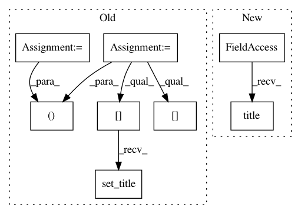

4f1e7f2f936bf5f3e6d1da8d8be843dc3273fe67,examples/1d/plot_filters.py,,,#,17
Before Change
// lowpass filters
// ---------------------------------------------------------------------------
fig, axs = plt.subplots(2, 1)
psis_f = (psi1_f, psi2_f)
Qs = (Q, 1)
for k in range(2):
axs[k].plot(np.arange(T)/T, phi_f[0], "b")
for psi_f in psis_f[k]:
axs[k].plot(np.arange(T)/T, psi_f[0], "b")
axs[k].set_xlim(0, 0.5)
axs[k].set_ylim(0, 1.2)
axs[k].set_xlabel("\omega")
axs[k].set_ylabel("\hat\psi_j(\omega)")
axs[k].set_title("Q = {}".format(Qs[k]))
fig.suptitle(("Fourier transforms of wavelets for all scales j with the "
"corresponding lowpass filter."))
After Change
plt.ylim(0, 1.2)
plt.xlabel(r"$\omega$", fontsize=18)
plt.ylabel(r"$\hat\psi_j(\omega)$", fontsize=18)
plt.title("Second-order filters (Q = 1)", fontsize=18)
//////////////////////////////////////////////////////////////////////////////////////////////////////////////////////////////////////////////////////////////
// Display the plots!
In pattern: SUPERPATTERN
Frequency: 3
Non-data size: 8
Instances
Project Name: kymatio/kymatio
Commit Name: 4f1e7f2f936bf5f3e6d1da8d8be843dc3273fe67
Time: 2018-11-21
Author: janden@flatironinstitute.org
File Name: examples/1d/plot_filters.py
Class Name:
Method Name:
Project Name: scikit-image/scikit-image
Commit Name: 4cef9aff929623188f11778db030ac933a910792
Time: 2018-09-12
Author: devel@sciunto.org
File Name: doc/examples/data/plot_general.py
Class Name:
Method Name:
Project Name: scikit-image/scikit-image
Commit Name: 4cef9aff929623188f11778db030ac933a910792
Time: 2018-09-12
Author: devel@sciunto.org
File Name: doc/examples/data/plot_scientific.py
Class Name:
Method Name: